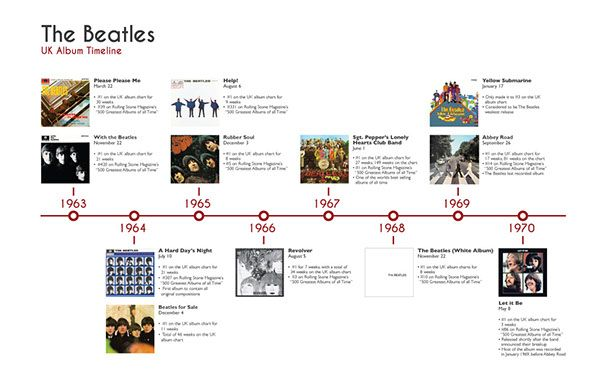

История | Главная | Общая информация | Фильмография | Источники | Контакты
Группа "The Beatles" начала свою историю в Ливерпуле, где Джон Леннон в 1956 году собрал первую группу под названием «The Blackjacks». Вскоре к нему присоединился Пол Маккартни, а затем — Джордж Харрисон. Сначала группа играла каверы на популярные хиты того времени, но вскоре начала писать собственные песни. Они выступали в клубах Ливерпуля и Гамбурга, что помогло им отточить свои навыки и завоевать преданных поклонников.
СТАНОВЛЕНИЕ ПОПУЛЯРНОСТИ (1960—1964)В 1962 году "The Beatles" подписали контракт с лейблом EMI и выпустили свой первый сингл "Love Me Do", который быстро стал хитом. После этого последовали другие успешные синглы, такие как "Please Please Me" и "From Me to You". В 1964 году группа совершила прорыв на американский рынок, выступив на шоу Эда Салливана, что стало началом волны "битломании". Фанаты стремились купить их альбомы, а концерты собирали огромные толпы.
МУЗЫКАЛЬНЫЕ ЭКСПЕРИМЕНТЫ (1965—1967)С середины 1960-х годов "The Beatles" начали активно экспериментировать с музыкальными стилями. Альбомы *Rubber Soul* и *Revolver* продемонстрировали их стремление к новаторству. В 1967 году вышел *Sgt. Pepper’s Lonely Hearts Club Band*, который стал символом психоделической эпохи и оказал огромное влияние на музыку и культуру того времени. Группа использовала новые технологии записи и разнообразные инструменты, что сделало их звучание уникальным.
КУЛЬТУРНОЕ ВЛИЯНИЕ (1967—1970)"The Beatles" стали не только музыкальными кумирами, но и культурными иконами. Их стиль жизни, мода и идеи о мире повлияли на молодежную культуру 1960-х годов. Они активно поддерживали идеи мира и любви, что отражалось в их текстах песен. Песни такие как "All You Need Is Love" стали гимнами эпохи. Группа также экспериментировала с психоделическими веществами, что отразилось на их творчестве.
РАЗВОД И НАСЛЕДИЕ (1970—ПО НАСТОЯЩЕЕ ВРЕМЯ)Группа официально распалась в 1970 году, после выхода альбома *Let It Be*. Каждый из участников продолжил свою сольную карьеру: Джон Леннон выпустил альбом *Imagine*, Пол Маккартни создал группу Wings, а Джордж Харрисон стал известен благодаря альбому *All Things Must Pass*. Несмотря на разногласия между участниками, их музыка продолжает вдохновлять миллионы людей по всему миру. "The Beatles
Временная линия

1963
1964
1965
1966
1967
1968
1969
1970